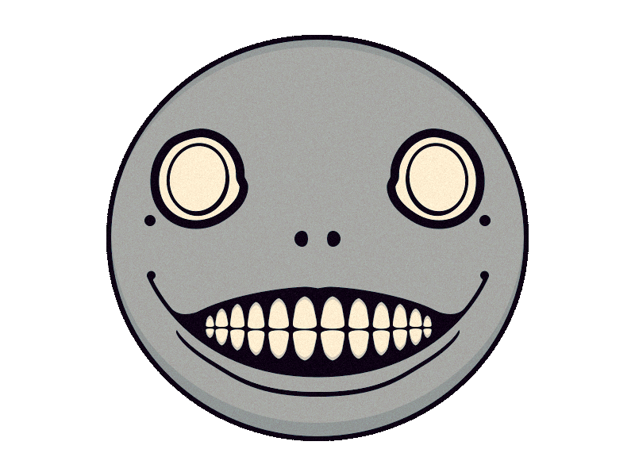

NIER AUTOMATA AUDIO VIZ

Track:
Wretched Weaponry
Birth of a Wish
Intensity:
Quiet
Medium
Dynamic
Add Vocals
Version:
Instrumental
Vocal
Become as Gods
This Cannot Continue
Go Full Screen
VISUAL FILTERS
Glitch |
Invert |
Blur
AUDIO FILTERS
Delay/Reverb:
Pan Left or Right:
L
R
CANVAS EFFECTS
Change Circle Radius
Data Stream Type
Frequency Range
WaveForm
???
Ian Oliver